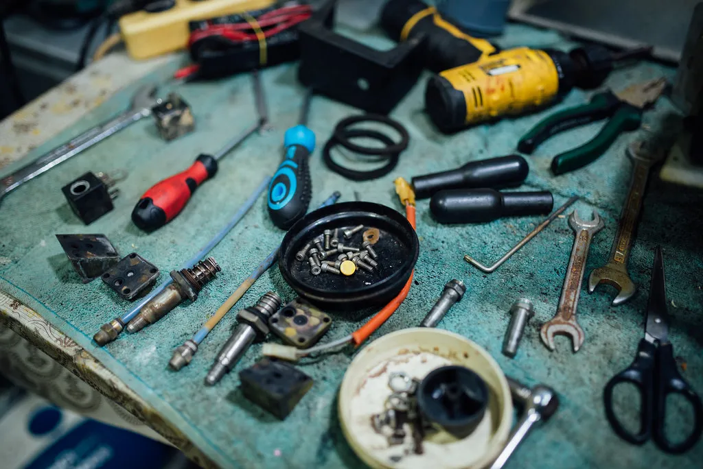

Réparer.Comprendre.Transmettre.
L'encyclopédie collaborative des réparations. Des guides concrets, vérifiés, écrits pour ceux qui n'ont jamais tenu un tournevis.
Le savoir
pour réparer
dure plus longtemps.
Guides pas à pasSimples et détaillés
Informations vérifiéesSources citées dans chaque fiche
Une communauté ouvertePassionnés et professionnels
Moins de déchetsPour une planète plus durable
Reprendre ma réparation
Choisissez un domaine
Voir tous les domainesProblème du moment
Tous les guidesComment ça marche ?
Découvrir en détail- 1. RecherchezDécrivez votre panne ou votre objet, ou lancez le diagnostic guidé.
- 2. SuivezDes étapes claires, avec les outils, les pièces et la sécurité.
- 3. RéparezLe mode accompagnement vous guide, une étape à la fois.
- 4. PartagezAjoutez vos astuces et vos réparations pour aider les autres.
Vous ne savez pas ce qui est en panne ?
Décrivez le symptôme : le diagnostic guidé vous pose quelques questions, classe les causes possibles et vous oriente vers la bonne fiche… ou vers un réparateur.

Un monde qui se répare
va plus loin.
Rejoindre la communauté
Rejoignez Les Pages Bleues
Partagez vos connaissances, posez vos questions, aidez d'autres personnes à réparer et faites vivre le savoir-faire.
Gratuit
Sans publicité intrusive
Ouvert à tous